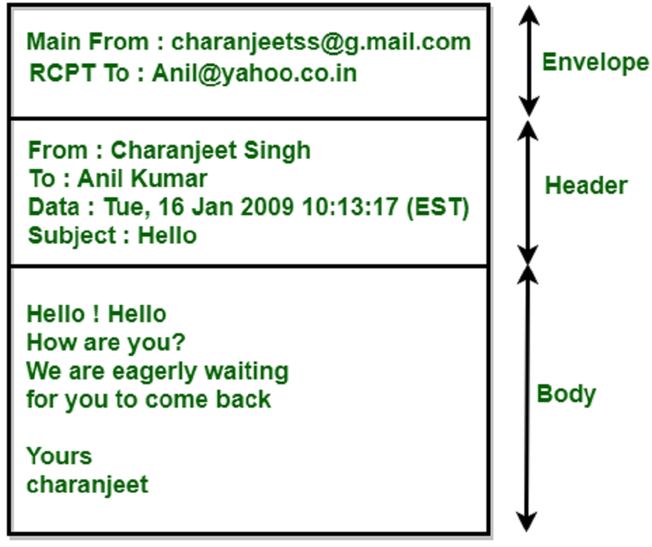

What is Email ?
Electronic mail, commonly shortened to “email,” is a communication method that uses electronic devices to deliver messages across computer networks. "Email" refers to both the delivery system and individual messages that are sent and received.
Company list of email service are:
1) Gmail
2) Mail.com
3) Yahoo! Mail
4) Outlook.com
5) GMX
6) Lycos
How to Create Gmail Account?
Step 1: Open Chrome Browser-> Type Gmail
Step 2: Click Create an Account
Step 3: Enter Name and Surname-> Next
Step 4: Enter DOB and Gender-> Next
Step 5: Enter your Email ID-> Next
Step 6: Enter your Password->
Step 7: Enter Recovery Gmail Address->Next
Step 8: Enter your Mobile Number->Next
Step 9: Enter your Code for Verifying your phone number.-> Skip -> Next.
Step 10 : Click I Agree the Google Privacy and Terms.
How to Compose (Send) a Email to any one?
Step 1: Click On Compose button.
Step 2: Enter recipient Email address, (in To : section)
Step 3: Enter your Subject and Full message-> Click Send Button.
Structure of E-Mail Address:
accountname@domainname.com
1) accountname: It is username who create an email account.
2) @ Sign: This is symbol is used in an email address to separate account name from domain name. This @ symbol is must use in email address.
3) domainname: This domain is company name who provide the email service.
Format of E-mail:
An e-mail consists of three parts that are as follows :
1. Envelope
2. Header
3. Body
1) Envelope : The envelope part encapsulates the message. It contains all information that is required for sending any e-mail such as destination address, priority and security level. The envelope is used by MTAs (Mail Transfer Agent) for routing message.
2) Header : The header consists of a series of lines.
| Header | Meaning |
|---|---|
| To: | E-mail address of primary receipt(s). |
| Cc: | E-mail address of secondary receipt(s). |
| Bcc: | E-mail address for blind carbon copies. |
| From: | Person or people who have created a message. |
| Sender: | E-mail address of the actual sender. |
| Received: | It is used to specify how to get back to the sender. |
| Return-Path: | It can be used to identify a path back to the sender. |
3. Body:-The body of a message contains text that is the actual content/message that needs to be sent.

What is Email Signature?
An email signature is text, like your contact information or a favorite quote, that’s automatically added at the end of Gmail messages as a footer.
How to create an Email Signature in Gmail?

Note: You can put up to 10,000 characters in your signature.
Step 1: Open Gmail.
Step 2:At the top right, click Settings Settings and then See all settings.
Step 3: In the "Signature" section, add your signature text in the box. .
Step 4:At the bottom of the page, click Save Changes.
What is Social Networking?
Social networking refers to using internet-based social media sites to stay connected with friends, family, colleagues, or customers. Social networking can have a social purpose, a business purpose, or both through sites like Facebook, Twitter, Instagram etc.
Social networking is also a significant opportunity for marketers seeking to engage customers. Facebook remains the largest and most popular social network, with 2 billion people using the platform daily.
Invented by: Mark Zuckerberg.
Created in: February 4, 2004
Written in: C++, Hack.
See detail infromation about Facebook.
Facebook is an online social media and social networking service owned by American technology giant Meta Platforms. Meta is one of the world's most valuable companies and among the ten largest publicly traded corporations in the United States. The company owns and operates Facebook, Instagram, Threads, and WhatsApp, among other products and services.
Note: On October 28, 2021, the parent company of Facebook changed its name from Facebook, Inc, to Meta Platforms.
Here. "Inc." is an abbreviation of "incorporated," and both the abbreviation and the full word mean that a company's business structure is a legal corporation. A corporation or "inc." is an entirely separate entity from its owners and shareholders.
Facebook Messenger
Developer : Meta Platforms.
Initial release : August 9, 2011
Written in: C++, JavaScript, PHP, Erlang
See detail information about Facebook Messenger
Messenger is an American proprietary instant messaging app and platform developed by Meta Platforms. Originally developed as Facebook Chat in 2008.
Messenger is used to send messages and exchange photos, videos, stickers, audio, and files, and also react to other users' messages and interact with bots. The service also supports voice and video calling. The standalone apps support using multiple accounts, conversations with optional end-to-end encryption, and playing games.
Developer : Meta Platforms.
Initial release : October 6, 2010;
Written in: Python
See detail information about Instagram
Instagram is a photo and video sharing social networking service owned by American company Meta Platforms. The app allows users to upload media that can be edited with filters, be organized by hashtags, and be associated with a location.
Invented by: Jan Koum, Brian Acton
Created in : 24 February, 2009
Written in : Erlang
WhatsApp (also called WhatsApp Messenger) is a freeware, cross-platform, centralized instant messaging (IM) and voice-over-IP (VoIP) service owned by United States tech conglomerate Meta Platforms. It allows users to send text, voice messages and video messages, make voice and video calls, and share images, documents, user locations, and other content. WhatsApp's client application runs on mobile devices, and can be accessed from computers. The service requires a cellular mobile telephone number to sign up. In January 2018, WhatsApp released a standalone business app called WhatsApp Business which can communicate with the standard WhatsApp client. The service was created by WhatsApp Inc. of Mountain View, California, which was acquired by Facebook in February 2014 for approximately US$19.3 billion. It became the world's most popular messaging application by 2015
Telegram
Invented by : Two brothers Nikolai Durov and Pavel Durov.
Initial release in : 14 August 2013
Written in : Desktop : C++, C, Java, Python; Android : Java; IOS : Swift
Telegram Messenger is a globally accessible freemium, encrypted, cloud-based and centralized instant messaging (IM) service. The application also provides optional end-to-end encrypted chats (popularly known as "secret chats") and video calling,VoIP ( voice-over-IP), file sharing and several other features. Telegram was first launched for iOS on 14 August 2013 and Android on 20 October 2013.
Invented by: Jack Dorsey, Noah Glass, Biz Stone, and Evan Williams
Founded in : March 21, 2006;
Launched in : July 15, 2006
Written in : Java, Ruby, Scala, JavaScript, Python
On Twitter, users can post texts, images and videos known as "tweets". Registered users can post, like, repost, comment and quote posts, and direct message other registered users. Twitter was created by Jack Dorsey, Noah Glass, Biz Stone, and Evan Williams in March 2006 and launched in July of that year. Its former parent company, Twitter, Inc. On October 27, 2022, Elon Musk acquired Twitter for US$44 billion.
Invented by : Reid Hoffman and Eric Ly
Launched in : May 5, 2003
Written in : Java, JavaScript, Scala
LinkedIn is a business and employment-focused social media platform that works through websites and mobile apps. It was launched on May 5, 2003. It is now owned by Microsoft. The platform is primarily used for professional networking and career development, and allows jobseekers to post their CVs and employers to post jobs. LinkedIn allows members (both workers and employers) to create profiles and connect with each other in an online social network which may represent real-world professional relationships. Members can invite anyone (whether an existing member or not) to become a connection. LinkedIn can also be used to organize offline events, join groups, write articles, publish job postings, post photos and videos, and more.
What is blog?
The word blog is a combined version of the words “web” and “log.” A blog, short for weblog, is a frequently updated web page used for personal commentary or business content. Blogs are often interactive and include sections at the bottom of individual blog posts where readers can leave comments. Most are written in a conversational style to reflect the voice and personal views of the blogger. Some businesses use blogs to connect with target audiences and sell products.
What is E-Commerce?
E-commerce (electronic commerce) is the buying and selling of goods and services, or the transmitting of funds or data, over an electronic network, primarily the internet. These business transactions occur either as business-to-business (B2B), business-to-consumer (B2C), consumer-to-consumer or consumer-to-business.
What Is Business-to-Business (B2B)?
Business-to-business (B2B), also called B-to-B, is a form of transaction between businesses, such as one involving a manufacturer and wholesaler, or a wholesaler and a retailer.
What Is Business-to-Consumer (B2C)?
The term business-to-consumer (B2C) refers to the process of selling products and services directly between a business and consumers who are the end-users of its products or services. Most companies that sell directly to consumers can be referred to as B2C companies.
What is Netiquette?
Netiquette is a combination of the words network and etiquette and is defined as a set of rules for acceptable online behavior. Similarly, online ethics focuses on the acceptable use of online resources in an online social environment.
Some basic and important rules Of Netiquette are:
1). Be Careful What You Type : One of the core rules of netiquettes is thinking before typing. Depending on your audience, you should be mindful of your tone. So, before writing or using emojis, think twice. Moreover, proofread your emails and online content to avoid spelling and grammatical errors.
2). Avoid Plagiarism (the act of copying another person’s ideas, words or work and pretending they are your own) : One of the biggest perils of being in cyberspace is copyright infringement. Do not use another person’s words, images or information without permission and citing the source. Copy-pasting comes easy while working online, especially when you have access to so much information. Go one step further and credit the source.
3). Always Use Your Professional Email Address For Official Communication: If you are working from home, send work emails using your official email address. If you do not have an official email, use a personal email that sounds professional. If your email has "cutegirl@gmail.com", "killerboy@gmail.com" it leaves a bad impression in front of the email recipient. This is an important netiquette rule for professionals and also a netiquette rule for students looking for jobs and internships.
4). Think Twice Before Posting Pictures: One of the basic rules of netiquettes says that you should avoid publishing or sharing unprofessional pictures. Posting unprofessional or inappropriate pictures (Voilence, Harassment, Suicide, Terrorism, adult images, False information, Hate speech etc), you should not post these kind of images because low age (below 18+) children also use internet.
5). Respect Others’ Privacy : Another important netiquette rule for online etiquette is valuing other people’s privacy. Receiving confidential information comes with responsibility, you must never compromise your colleague’s or company’s privacy. Without permission, never make confidential information public in cyberspace. And only share information with people it concerns. This is a very important netiquette rule for students.
Overview of e-Governance Services like Railway Reservation, Passport, eHospital [ORS]
This is one of most efficient and successful medium between Government and people Every per easily connect with government through e-governance and know about status of land, applications domicile certificate, Income certificate, status of scholarship, status of government functionaries working in his village/block/district, Government Orders etc
Railway Reservation
Founded : 27 September 1999
Headquarters : New Delhi, India
Owner : Government of India
Website : www.irctc.co.in
Indian Railway Catering and Tourism Corporation (IRCTC) is an Indian public sector undertaking that provides ticketing, catering, and tourism services for the Indian Railways. It was initially wholly owned by the Government of India and operated under the administrative control of the Ministry of Railways but has been listed on the National Stock Exchange (NSE) and Bombay Stock Exchange (BSC) since 2019.
Passport
Note: The Ministry of External Affairs (MEA) launched the Passport Seva Project (PSP) in May 2010.
A passport is an official travel document issued by a government that contains a person's identity. A person with a passport can travel to and from foreign countries more easily.
Documents required for a fresh passport:
1).A passport size photo.
2).Photo passbook of running bank account statement.
3).A voter ID card.
4).Address Proof
5).Aadhaar card
6).Utility Bill (Electricity bill, Gas Connection Bill, Phone Bill, etc)
7).Rent agreement
8).Driving license
9).PAN card
10).School leaving certificate (10th Mark sheet)
11).Birth certificate issued by the Municipal Corporation
12). Marriage certificate (optional)
eHospital (ORS)
ORS (Online Registration System) is the online patient portal for citizens to book online appointment for the hospitals. ORS is accessible over Internet at https://ors.gov.in. ORS is a system to link hospitals across the country for booking online appointment and for providing patient centric services like viewing lab reports, checking blood availability status and making online payment.
As part of the Digital India initiative of Ministry of Electronics and Information Technology,NIC (National Informatics Centre) has developed the e-Hospital, e-BloodBank and Online Registration System (ORS) applications. ORS portal was inaugurated by the Hon’ble Prime Minister of India on 1st July 2015.
ABHA (Ayushman Bharat Health Account) number is a 14 digit number that will uniquely identify you as a participant in India’s digital healthcare ecosystem. ABHA number will establish a strong and trustable identity for you that will be accepted by healthcare providers and payers across the country. Prime Minister Narendra Modi launched Ayushman Bharat Digital Health Mission on 27th September 2021.
UMANG APP : Unified Mobile Application for New-Age Governance (UMANG) has been developed as a single mobile platform to deliver major Government services. Hon’ble Prime Minister has dedicated UMANG to nation on 23rd November, 2017. UMANG App is available on Android, iOS, Windows & Web. It can be downloaded by giving missed call on 97183-97183. This app is offered by the Ministry of Electronics and Information Technology (MeitY) along with the National e-Governance Division (NeGD).
DigiLocker APP : As name suggests, this you can it store your digital documents. The Ministry of electronic & Information Technology (MEITY) offers this app as part of the digital Indian initiative DigiLocker is directed towards minimizing the dependence on physical document. It was launched to the public by Prime Minister Narendra Modi on 1 July 2015.
BHIM APP : BHIM (Bharat Interface for Money) is an Indian mobile payment app developed by the National Payments Corporation of India (NPCI), based on the Unified Payments Interface (UPI). Launched on 30 December 2016, it is intended to facilitate e-payments directly through banks and encourage cashless transactions. It was named after Dr Bhimrao Ambedkar.